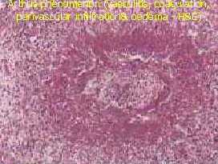
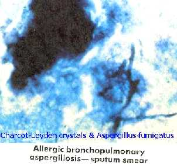
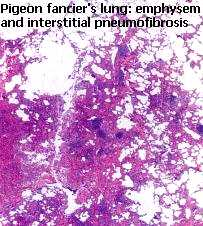

LOCAL IMMUNE COMPLEX DISEASE (ARTHUS REACTION)
In 1903 N.-M. Arthus and M. Breton in France discovered that if offending Ag is injected via intradermic route to a sensitized rabbit, this produces 1-2 hours later local edema and redness, which progress and form a kind of infiltrate. In severe course 12 hours later an animal may develop local hemorrhagic necrosis. The common time of infiltrate resolution is 48 hours.

The Arthus reaction may be defined as a localized area of tissue necrosis resulting from acute immune complex vasculitis. The reaction can be produced experimentally by intracutaneous injection of antigen in an immune animal having circulating antibodies against the antigen. The particular feature of Arthus reaction is the location of Ig and Ag on two opposite sides of histohematic barrier, separated by vascular wall. Because of the big excess of antibodies, as the antigen diffuses into the vascular wall, large immune complexes are formed, which precipitate locally either in the wall itself, or perivascularly, involving the tissue site of Ag injection. Then IC trigger the inflammatory reaction already discussed. Complement activation and TNF-a production are of utmost significance. Antibodies against TNFa can halve the reaction.
Unlike IgE-mediated type I reactions, which appear immediately, the Arthus lesion develops over a few hours and reaches a peak four to ten hours after injection, when it can be seen as an area of visible edema with severe hemorrhage followed occasionally by ulceration. Immunofluorescent stains will disclose complement, immunoglobulins, and fibrinogen precipitated within the vessel walls, usually the venules. On light microscopy, these produce a smudgy eosinophilic deposit that obscures the underlying cellular detail, an appearance termed "fibrinoid" necrosis of the vessels. Rupture of these vessels may produce local hemorrhages, but more often the vascular lamina undergo thrombosis, adding an element of local ischemic injury.

Classic Arthus phenomenon is not rare in clinics. This is the mechanism of aseptic post-injection infiltrates after intradermic injections of slowly reabsorbed antigenic and haptenic drugs or in multiple injection of anti-rabies vaccine. Medical staff in cases like this has to refute possible patient’s allegations and accusations for “non-sterile injection caused abscess”. Arthus phenomenon is a central link for large group of syndromes, caused by different inhaled mold and bacterial allergens, which manifests in so called “extrinsic allergic alveolitis” (EAA).AA is of great importance for differential diagnostics in pneumoallergology, because its symptoms resemble those of atopic bronchial asthma. Common etiology of EAA is related to regular repeated exposure to allergens of Hyphamyces and Actinomycetes. EAA, as occupational diseases (Miller’s asthma, Brewer’s lung) are known since XVII century and were included by the founder of occupational pathology, Italian doctor Bernardo Ramazzini into his first directory of occupational pathology (1700). In EAA the serum of a patient contains precipitating antibodies against fungi and some bacterial allergens. The formation of IC, complement activation, leukocyte attraction and inflammation occur, mostly, within lung interstitium, between capillary wall and alveolar wall. This produce edema, bronchial spasm, symptoms of interstitial pneumonia with alveolar destruction and, later, pneumofibrosis. The following table characterizes the most frequent forms of EAA:
| DISEASE | OCCUPATIONAL HAZARD | ALLERGEN(S) |
| Farmer's lung | Mouldy hay | Micropolyspora faeni |
| Pigeon fancier's lung  |
Bird's excrements | Bird serum proteins and Aspergillus, thermophilic Actnomycetes |
| Cheese worker's lung | Mouldy cheese | Penicillum casei |
| Sawyer's lung | Cedar, mahogany and maple sawdust and chips | Criptostroma corticale, thermophilic Actnomyces |
| Mushroom worker's lung | dung, compost, mushrooms | Mecetomonospora vulgaris, thermophilic Actnomyces |
| Sauna habitue’s lung | Polluted steam | Aspergillus pullulans |
| Humidifier lung | Moistured and conditioned air | Thermophilic Actnomycetes, Aureobasidium pullulans, protozoal proteins |
| Laundress' lung | Enzyme-containing detergents | Bacillus subtilis alcalase |
| Drug-induced alveolitis | Inhaled drugs | Inthal, nitrofurans, quinoidin etc. |
| Bagassosis (“New Guinea” lung) | Mouldy pressed sugar cane | Thermophilic Actinomycetes |
| Bissinosis | Cotton dust | Aspergillus fumigatus |
| Sequoiosis | Sequoia mold | Graphium, Ameriobasidium pullulаns |
| Suberosis | Sputum saprophytes | Thermophilic Actnomycetes |
| Maple bark lung | Maple bark mold | Corticostroneo corticale |
| Trimellitic anhydride pneumonia | Chemicals | Haptenated protein |
| Granary weevil alveolitis | Wheat mold | Sitophilus granarius |
In Farmer’s lung, as a result of Micropolyspora faeni inhalation with mouldy hay particles, a patient suffers from dyspnea, productive cough, fatigue and slight fever. The symptoms occur after 4-12 h of exposure to hay and stay for many hours (even for several days). The lungs involved display interstitial Arthus phenomenon with polymorphonuclear infiltration, alveolar destruction and, later – mononuclear infiltration, germinal centers formation and appearance of granulomas with epitelioid and giant cells. Late stage of this process is sometimes called “granulomatous pneumonitis.” This picture witness for involvement of DTH mechanisms in plus to IC mediated ITH process.
Practically, the most important EAA is acute or subacute bronchopulmonary aspergillosis. This disease is caused by ubiquitous mold Aspergillus fumigatus, less often – by Aspergillus niger et flavus. The mechanisms of aspergillosis combine IC mediated and anaphylactic (anaphylactoid) reactions. As a result, clinical manifestation of the disease is hardly distinguishable from classic atopic bronchial asthma. Moreso, aspergillosis can be superimposed over classic bronchial asthma after several years of its progressing, because atopic asthmatic patients, prone to Ig E synthesis, are less capable for protective anti-mold Ig A production. In aspergillosis lungs acquire eosinophilic infiltrates, rapidly changing their location and shape on x-ray (like in larvae migration syndrome – see above). The cough becomes productive, sometimes it is possible to inoculate sputum for Aspergillus culture.
Interestingly, this disease was originally described in several archeologists, which discover the sepulchre of Tutanchamon, as “Pharaoh’s damnation disease”. One of the cases was so severe, that caused a fatal outcome.
Aspergillus is a saprophyte of organic debris. Due to this, aspergillosis may be epidemiologically masked and misdiagnosed as an anaphylaxis against domestic birds and pets, plants, home dust or as occupational allergy. For example, allergy towards dressings contaminated with pus, described among surgical nurses, definitely appeared to be aspergillosis. For distinguishing diagnosis, it is necessary to remind once more, that classic asthma is bronchitis with clean lung x-ray images. Aspergillosis combines the symptoms of bronchitis with that of interstitial pneumonia, so x-ray locates infiltrative shadows.
Paraphrasing the well-known Latin dictum “Per aspera ad astra”, we may say that the way to correct diagnosis in asthmology, sometimes, goes “Per aspera ad asthma”. We mean the necessity to rule out aspergillosis, aspiration syndrome, and aspirin-caused Vidal’s syndrome in order to establish correct diagnosis of bronchial asthma.
In stomatological practice one of the most broadly spread groups of illnesses – periodontal diseases – are brought in by the Arthus-like IC mediated mechanisms, triggered by oral thermophilic Actinomycetes of gum socket.
NEXT CHAPTER OR